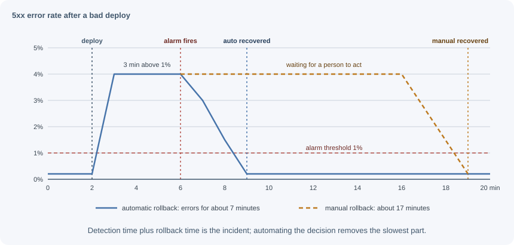
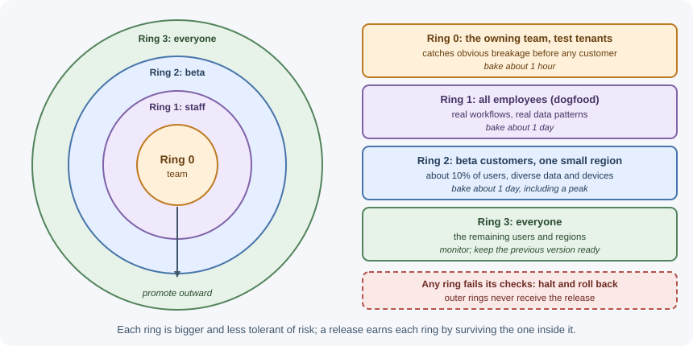

Rollbacks and Safe Releases¶
A rollback returns production to the last version that worked. A safe release is one designed so that a bad change is caught early, affects few users, and can be undone quickly. This lesson covers rollback versus roll forward, what has to be true for a rollback to work at all, automated rollback driven by health checks and metrics, post-deploy verification with smoke tests and synthetic checks, bake time, release checklists, change freezes and deployment windows, blast radius reduction with rings, regions, and cells, and how all of this shows up in the DORA metrics.
Why it matters¶
Most outages are caused by change. The Google SRE book's introduction states that SRE has found roughly 70% of outages are due to changes in a live system, and recommends progressive rollouts, quick and accurate detection of problems, and safe rollback when problems arise. You cannot stop changing software, so the practical goal is that a bad change is cheap: few users see it, for a short time, and recovery needs no heroics.
The time a bad release hurts users is detection time plus decision time plus recovery time. Each can be designed: detection with good metrics and canaries, decision with a pre-agreed rule ("if the error rate doubles, roll back"), and recovery with a previous version that is ready to run. Teams that leave any of the three to improvisation at 3 a.m. have long incidents.
Real-world usage¶
- Amazon: rollback-safe changes. The Amazon Builders' Library article Ensuring rollback safety during deployments describes a two-phase technique for changes in data or protocol formats: first deploy a version that can read the new format but still writes the old one (prepare), and only after it is everywhere deploy the version that writes the new format (activate), so a rollback at any point leaves servers able to read what was written.
- Amazon: automated rollback. Automating safe, hands-off deployments describes pipelines that roll back automatically when alarms fire, bake for at least an hour after the first production host, block deploys while high-severity alarms are active, and avoid nights, weekends, and holidays.
- DORA. The DORA metrics guide measures delivery with throughput (change lead time, deployment frequency, failed deployment recovery time) and instability (change fail rate, deployment rework rate). Change fail rate is "the ratio of deployments that require immediate intervention following a deployment"; failed deployment recovery time is how long recovery from such a deployment takes.
- CrowdStrike, July 2024. The root cause analysis executive summary for the Channel File 291 incident describes a content update delivered to Windows hosts that crashed them, and commits to staged deployment of such content through rings with canary testing. A configuration or content push is a release and needs the same safety as code.
- Cloudflare, November 2025. The post-incident report for 18 November 2025 explains how a generated feature file that doubled in size propagated quickly across the network and crashed the proxy software, and lists remediations including hardening ingestion of internally generated configuration "in the same way we would for user-generated input" and more global kill switches.
Popular tools and providers: Argo Rollouts, Flagger, Spinnaker, AWS
CodeDeploy (automatic rollback on CloudWatch alarms), Kubernetes
rollout undo, Helm rollback, feature flag platforms, Prometheus and
Alertmanager, Datadog, Grafana, synthetic monitoring tools (Checkly,
Datadog Synthetics, Grafana Synthetic Monitoring), and error trackers
with release health such as Sentry.
How it works¶
Rollback or roll forward¶
| Roll back | Roll forward | |
|---|---|---|
| What it is | Return to the previous known-good version | Ship a new version that fixes the problem |
| Speed | Fast if the previous version is ready (seconds to minutes) | As fast as your pipeline: build, test, deploy |
| Risk | Low if compatibility was preserved; dangerous if data changed shape | A rushed fix can add a second bug |
| Needs | Previous artifact, compatible schema and data, no irreversible effects | A clear diagnosis and a fast, trustworthy pipeline |
| Typical choice | Default when the cause is unclear or impact is high | When rollback is unsafe, or the fix is tiny and certain |
The rule most teams adopt: restore service first, diagnose later. If a release correlates with the problem and rollback is safe, roll back without waiting for a root cause. A feature flag switched off counts as the fastest rollback of all.
![Diagram: after errors rise following a release, first ask whether the problem started with the release; if not, continue normal incident response; if so, ask whether the change is behind a feature flag and if yes turn it off in seconds; if not, ask whether rollback is safe given schema, data, and side effects, and if yes roll back now and investigate after recovery; if not, ask whether a small fix is faster than mitigating, and if yes roll forward with a hotfix through an expedited pipeline, otherwise mitigate first by scaling, shedding load, or disabling the feature, then fix.](../rollback-decision-flowchart.svg)
What makes rollback possible¶
Rollback is a property you build in advance, not a button:
- Immutable, retained artifacts. The previous image or package must still exist and be identical to what ran before. Registry cleanup policies that delete "old" images can delete your rollback target.
- The previous version is runnable. Its configuration, secrets, and dependencies still exist. If you rotated a credential and the old version reads it from a different place, rollback fails.
- Compatible schema and data. The database still has everything the old code needs, and data written by the new code is readable by the old code (expand and contract, prepare and activate). See zero-downtime database migrations.
- Compatible messages and caches. Events, queue messages, and cache entries written by the new version must not crash the old one.
- No irreversible side effects, or a plan for them. Emails sent, payments taken, and webhooks delivered cannot be rolled back; a bug in those paths needs compensation, not just a rollback.
- Clients. Browsers that loaded new frontend assets may call APIs the old backend lacks; mobile apps cannot be rolled back at all (see releasing desktop and mobile apps).
- Practice. A rollback path that has never been exercised is a guess. Roll back in staging regularly and occasionally in production on purpose.
Automated rollback on health and metrics¶

The slowest part of most incidents is a human noticing, deciding, and acting. Automation removes it: the deployment tool watches health checks and metrics during and after the rollout, and reverts on its own when they cross agreed thresholds.
- Kubernetes Deployments stop a rollout whose pods never become ready, but do not roll back by themselves.
- AWS CodeDeploy can roll back automatically when a deployment fails or when a CloudWatch alarm attached to the deployment group fires.
- Argo Rollouts and Flagger run analysis during canary steps and abort to the stable version when it fails.
- Feature flag platforms can switch a flag off when guardrail metrics regress.
Worked example: suppose the bad version failed every request. A
99.9% monthly availability target allows 30 x 24 x 60 x 0.001 = 43.2
minutes of full outage per month. The automatic path above (about 7
minutes) spends 16% of the month's budget; the manual path (about 17
minutes) spends 39%. With a 10% canary in front, the same failures reach
one tenth of the traffic, about 1.6% and 3.9% of the budget.
Thresholds need care. Too sensitive and normal noise triggers rollbacks (at low traffic, two errors can be "a 5% error rate"); too loose and real regressions pass. Require several consecutive data points, a minimum request count, and compare with a baseline where possible.
Deployment verification¶
| Check | When | What it proves |
|---|---|---|
| Readiness probes | As each instance starts | The process can serve |
| Version check | Right after the deploy | The intended version is actually running everywhere |
| Smoke tests | Right after the deploy, against production | Key flows work end to end (sign in, list tasks, create a task in a test account) |
| Canary analysis | During progressive rollout | The new version behaves no worse than the old one under real traffic |
| Synthetic checks | Continuously, every minute | Key flows keep working, from outside, even with no real users active |
| Error tracker release health | Hours after the deploy | New errors and crash rates by release |
| Business metrics | Hours to days | Sign-ups, tasks created, payments are not quietly down |
Smoke tests must exercise real paths, not just /readyz. Use dedicated
test accounts or tenants so writes in production are harmless and easy
to clean up.
Bake time¶
Bake time is how long a version runs at one stage before it is promoted further. Some failures need time to appear:
- memory leaks and slow resource exhaustion,
- daily or hourly jobs (a nightly report, a cache refresh, log rotation),
- traffic peaks (the Monday-morning login rush),
- rare paths (month-end billing, a specific locale, a certificate renewal).
Amazon's pipelines bake at least an hour after the first production host and at least 12 hours after the first region; Microsoft's guidance suggests about a day per tier, including a period of peak usage. Shorter bakes are fine for low-risk changes; the point is to choose them deliberately rather than promote the moment the dashboard looks green.
Release checklists¶
A short checklist, kept in the repository and used for risky releases, catches the predictable mistakes:
- Is the previous version's artifact retained and its configuration unchanged?
- Are database changes expand-only in this release?
- Is the change behind a flag, and is the flag's default the old behavior?
- What metrics and thresholds mean "roll back", and who decides?
- Are on-call engineers aware, and is this inside a deployment window?
- Are dependent teams (mobile, partners, support) informed of visible changes?
Go/no-go criteria, release captains, and coordinating one release across web, API, and mobile are covered in release trains and release management.
Change freezes and deployment windows¶
- Deployment windows restrict deploys to times when people are available to respond: working hours, not Friday evening, not during a holiday. Amazon's and Microsoft's guidance both favor deploying during working hours, early in the week.
- Change freezes stop non-urgent changes during high-risk periods (a major sales event, year-end, a big launch).
Both reduce risk during the window and increase it afterwards: changes queue up and ship as one large batch when the freeze lifts, which is harder to test and debug. Keep freezes short, allow small low-risk changes where possible, keep an approved path for emergency fixes, and release the backlog gradually after the freeze.
Reducing blast radius¶

Blast radius is the share of users or systems a failure can reach. Ways to shrink it, from finest to coarsest:
- Feature flags: 1% of users, or only staff.
- Canary traffic: a small share of requests.
- Rings: team, employees, beta customers, everyone.
- One box, one AZ, one region: infrastructure stages.
- Cells: independent copies of the stack, each serving a fixed set of customers.
These combine. Advanced deployment patterns covers waves, cells, and rings in depth. The same staging applies to configuration and data pushes, which are releases too, as the Google, Cloudflare, and CrowdStrike reports show.
Measuring it: DORA metrics¶
Two DORA metrics measure release safety directly:
- Change fail rate: of 120 production deployments in a quarter, 9
needed immediate intervention (rollback, hotfix, or flag off), a change
fail rate of
9 / 120 = 7.5%. - Failed deployment recovery time: how long those 9 took to recover, typically reported as a median.
DORA's research consistently finds that speed and stability go together: teams that deploy small changes often also tend to have lower change fail rates and faster recovery. Small batches, automated verification, and fast rollback are what make that possible. How to compute these metrics from deployment and incident records is shown in measuring delivery performance.
Rolling back things that are not code¶
| What changed | How to undo it |
|---|---|
| Application version | Redeploy the previous image or release |
| Feature flag | Switch it back; keep an audit log of who changed what |
| Runtime configuration | Revert the commit in the config repository and redeploy, or restore the previous version in the config service |
| Infrastructure (Terraform) | Revert the commit and apply; some changes (deleted data stores) cannot be undone by code |
| Database schema | Usually roll forward with a new migration |
| Data | Restore from backup or point-in-time recovery, or run a corrective job |
| DNS | Revert the record, then wait for TTLs and caches |
When to use and when not to use¶
| Situation | Choose |
|---|---|
| A release correlates with errors, rollback is compatible | Roll back immediately |
| The problem is behind a flag | Switch the flag off |
| The new version already wrote data the old version cannot read | Roll forward, or mitigate and then roll forward |
| The fix is one line, certain, and the pipeline takes 5 minutes | Roll forward is acceptable, with an expedited review |
| Cause unclear, high impact | Roll back first, investigate with the old version running |
| Mobile or desktop client release | You cannot roll back installed apps: halt the rollout, disable the feature by flag, and ship a fix |
Avoid automatic rollback where its trigger cannot be trusted, for example a service with so little traffic that one error trips the threshold. Use minimum request counts or longer windows, or alert a human instead.
Practical examples¶
Verify after deploying, and roll back automatically¶
#!/usr/bin/env bash
# scripts/deploy-and-verify.sh: deploy, verify, watch metrics, roll back on failure
# usage: deploy-and-verify.sh <image>
set -euo pipefail
IMAGE="$1"
PROM="http://prometheus.monitoring.svc.cluster.local:9090"
QUERY='sum(rate(http_requests_total{service="taskflow-api",code=~"5.."}[2m])) / sum(rate(http_requests_total{service="taskflow-api"}[2m]))'
THRESHOLD=0.01 # 1% errors
WATCH_MINUTES=10
BAD_LIMIT=3 # consecutive bad samples before rolling back
rollback() {
echo "rolling back: $1" >&2
kubectl rollout undo deployment/taskflow-api
kubectl rollout status deployment/taskflow-api --timeout=5m
exit 1
}
kubectl set image deployment/taskflow-api api="$IMAGE"
kubectl rollout status deployment/taskflow-api --timeout=5m || rollback "rollout did not become ready"
./scripts/smoke-test.sh https://api.taskflow.example.com || rollback "smoke tests failed"
bad=0
for _ in $(seq 1 "$WATCH_MINUTES"); do
sleep 60
rate=$(curl -fsS --get "$PROM/api/v1/query" --data-urlencode "query=$QUERY" |
jq -r '.data.result[0].value[1] // "0"')
echo "5xx rate: $rate"
if awk -v r="$rate" -v t="$THRESHOLD" 'BEGIN { exit !(r > t) }'; then
bad=$((bad + 1))
[ "$bad" -ge "$BAD_LIMIT" ] && rollback "5xx rate above $THRESHOLD for $bad minutes"
else
bad=0
fi
done
echo "release verified"
rollout statusfails when the new pods do not become ready in time.- Smoke tests run against production before the watch begins.
- The metric must be bad for three consecutive minutes, so one noisy sample does not trigger a rollback.
A smoke test that exercises real paths¶
#!/usr/bin/env bash
# scripts/smoke-test.sh: real requests against a dedicated test tenant
# usage: smoke-test.sh <base-url>
set -euo pipefail
BASE="$1"
AUTH="Authorization: Bearer $SMOKE_TEST_TOKEN" # injected by CI, test tenant only
curl -fsS "$BASE/readyz" > /dev/null
curl -fsS "$BASE/version" | jq -e '.version' > /dev/null
# Read path
curl -fsS -H "$AUTH" "$BASE/tasks?limit=1" | jq -e 'type == "array"' > /dev/null
# Write path, then clean up
id=$(curl -fsS -H "$AUTH" -H "Content-Type: application/json" \
-d '{"title":"smoke test"}' "$BASE/tasks" | jq -r '.id')
curl -fsS -H "$AUTH" -X DELETE "$BASE/tasks/$id" > /dev/null
echo "smoke tests passed"
Automatic rollback in AWS CodeDeploy¶
aws deploy update-deployment-group \
--application-name taskflow-api \
--current-deployment-group-name production \
--auto-rollback-configuration enabled=true,events=DEPLOYMENT_FAILURE,DEPLOYMENT_STOP_ON_ALARM \
--alarm-configuration 'enabled=true,alarms=[{name=taskflow-api-5xx-high},{name=taskflow-api-p99-high}]'
When either CloudWatch alarm fires during a deployment, CodeDeploy stops it and redeploys the last known-good revision.
Rolling back a Helm release¶
helm history taskflow -n production # list revisions with status and chart version
helm rollback taskflow 41 -n production --wait --timeout 5m
Helm rollback restores the Kubernetes manifests of revision 41. It does not touch the database, so it is only safe when the schema is compatible with that revision.
Keep rollback targets in the registry¶
An Amazon ECR lifecycle policy, saved as ecr-lifecycle.json:
{
"rules": [
{
"rulePriority": 1,
"description": "Release images expire only after a year",
"selection": {
"tagStatus": "tagged",
"tagPrefixList": ["release-"],
"countType": "sinceImagePushed",
"countUnit": "days",
"countNumber": 365
},
"action": { "type": "expire" }
},
{
"rulePriority": 2,
"description": "Keep the 50 most recent other images",
"selection": {
"tagStatus": "any",
"countType": "imageCountMoreThan",
"countNumber": 50
},
"action": { "type": "expire" }
}
]
}
Applied with aws ecr put-lifecycle-policy, it keeps tagged release images
for a year and only trims other images beyond the newest 50. In ECR, an
image matched by a higher-priority rule's tag selection is not expired by
a lower-priority rule, so the catch-all rule cannot remove release images.
A release checklist for risky changes¶
# docs/release-checklist.md
[ ] Previous release image is retained (tag and digest noted below)
[ ] Migrations in this release are expand-only; contract is scheduled later
[ ] New behavior is behind flag ______, default off
[ ] Rollback triggers agreed: 5xx > 1% for 3 min, p99 > 800 ms for 5 min
[ ] Smoke tests and synthetic checks cover the changed flow
[ ] Deploying inside the window (Mon-Thu, 09:00-15:00 local), on-call aware
[ ] Support and mobile teams told about visible changes
Previous release: ghcr.io/example/taskflow-api@sha256:________
Best practices¶
- Make rollback the default response to a release-correlated incident when it is safe; diagnose afterwards.
- Keep every release artifact immutable and retained; never deploy mutable tags.
- Keep schema, data, messages, and caches compatible with the previous version (expand and contract, prepare and activate).
- Automate verification: version check, smoke tests, canary analysis, synthetic checks.
- Automate rollback on clear, noise-resistant signals.
- Bake long enough to cover peaks and scheduled jobs.
- Release in small batches, during working hours, through rings.
- Treat configuration, flags, and data pushes as releases with the same safety.
- Practice rollbacks; track change fail rate and recovery time.
In production¶
- The rollback failed because the old image was gone.
Detect:
ImagePullBackOffor "manifest unknown" during rollback. Cause: a registry lifecycle policy deleted older images. Fix: retention rules that protect release tags, and record the previous digest in every deploy. - The rollback made things worse. Detect: new errors from the old version, such as parse failures or missing columns. Cause: the new version wrote data in a format the old version cannot read, or a migration removed something. Fix: prepare-then-activate format changes, expand-only migrations, and testing rollback in staging.
- Automatic rollbacks keep firing on healthy releases. Detect: rollbacks with no user complaints; the metric spiked on a handful of requests. Cause: thresholds without minimum volume or consecutive-sample rules. Fix: require a minimum request count, several bad samples in a row, and baseline comparison.
- Smoke tests passed but users could not sign in. Detect: support tickets after a "green" deploy. Cause: smoke tests checked only health endpoints. Fix: smoke tests and synthetic checks that exercise sign-in and the main flows with test accounts.
- Rolling back the code did not fix it. Detect: errors persist with the previous version running. Cause: the real change was a configuration value, flag, or infrastructure change made alongside the deploy. Fix: record every change (code, config, flags, infra) on one timeline and version configuration like code.
- The first release after a freeze caused a long outage. Detect: an unusually large release (many PRs) right after the freeze. Cause: batched changes, hard to verify and debug. Fix: shorter freezes, small low-risk changes allowed, gradual release of the backlog.
Important terminology¶
- Rollback: returning to the previous known-good version.
- Roll forward: fixing a problem with a new release.
- Known-good version: the last release that met its health criteria.
- Automated rollback: a rollback triggered by the deployment system from health checks or metrics.
- Smoke test: a quick end-to-end check of key flows right after a deploy.
- Synthetic check: a scripted request run continuously against production from outside.
- Bake time: how long a release runs at a stage before promotion.
- Deployment window: the times when deploys are allowed.
- Change freeze: a period when non-urgent changes are blocked.
- Blast radius: the share of users or systems a failure can affect.
- Change fail rate: the share of deployments needing immediate intervention.
- Failed deployment recovery time: how long recovery from such a deployment takes.
Common mistakes and misconceptions¶
- Assuming rollback is always possible because "we can redeploy the old version".
- Waiting for a root cause before rolling back.
- Treating down migrations as a rollback plan for data.
- Smoke tests that only call a health endpoint.
- Automatic rollback on a single noisy sample.
- Freezes that create one enormous release afterwards.
- Forgetting that configuration, flag, and data changes need rollbacks too.
- Counting only code deploys when measuring change fail rate.
Revision questions¶
- List five conditions that must hold for a rollback to be safe.
- When is rolling forward the better choice?
- Explain the prepare-then-activate technique for changing a data format.
- A 99.95% monthly target allows how many minutes of full outage in a 30-day month? How much of it does a 9-minute full outage consume?
- Why must an automated rollback trigger require more than one bad data point?
- Why can change freezes increase risk after they end?
- In a quarter, 200 deploys led to 14 rollbacks or hotfixes. What is the change fail rate?
- Why did the CrowdStrike and Cloudflare incidents lead to staged rollouts for content and configuration, not only code?
Further learning¶
- Amazon Builders' Library: Ensuring rollback safety during deployments
- Amazon Builders' Library: Automating safe, hands-off deployments
- DORA: Software delivery performance metrics
- Google SRE book: Release engineering
- AWS CodeDeploy: Redeploy and roll back a deployment
- Helm: helm rollback
- Next: deploying frontends and static sites. Back to the deployment strategies overview.